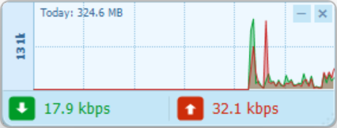

A lightweight network bandwidth monitor that lives in the corner of your screen — DU Meter style, but free, modern, and built for Windows 11.

Single-window widget, draggable, always-on-top optional. Sub-megabyte RAM, near-zero CPU.
Vertical bar spikes — green for download, red for upload. The classic DU Meter look, rewritten in v1.6 for cleaner reading.
Counts the actual interface, not the underlying NIC — so the numbers stay honest under any VPN tunnel.
12 px Win11-style rounded corners, vertical gradient background, smooth jitter-free resize, and a Segoe UI Semibold speed readout.
v1.7 checks GitHub for new releases on startup (throttled to once every 6 h). A quiet tray toast notifies you — click to open the release page. Manual check + toggle in the tray menu.
No telemetry, no ads, no "pro" tier. Just a number and a graph.
A single self-contained app — run it from any folder or a USB stick. It isn't code-signed, so if SmartScreen warns you, click More info, then Run anyway.
No telemetry, no ads, no "pro" tier. NetMon only reads your own network counters, on your machine.
Runs on 64-bit Windows 10 and 11. Built with C# / WinForms on .NET.